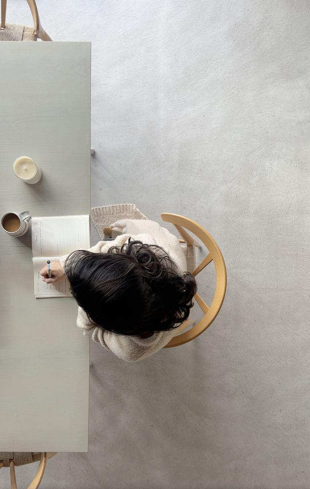
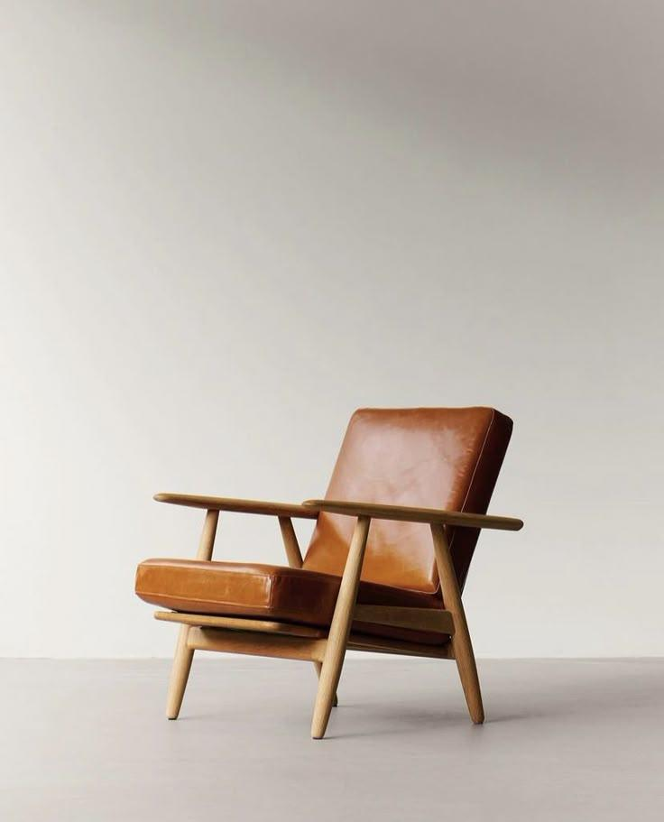

Ansiedade e crises de pânico
Preocupação persistente, tensão, crises e a sensação de perder o controle.
Psiquiatria e saúde mental
Atendimento fundamentado em evidências científicas e atento à história de cada pessoa.
Apenas consultas particulares
Dra. Fernanda MachadoMédica · CRM-SP 205.163
Sobre
Sou Fernanda Nunes Machado, médica, com atuação em psiquiatria e saúde mental.
Minha prática médica é fundamentada no conhecimento científico, na atualização contínua e na compreensão de que cada pessoa possui uma história que precisa ser considerada durante o cuidado.
Valorizo diagnósticos criteriosos, tratamentos bem fundamentados e decisões clínicas responsáveis. Acredito, também, que o exercício da medicina exige sensibilidade para compreender as particularidades de cada paciente, sem perder a objetividade e o rigor necessários.
Para mim, a boa prática médica se constrói no equilíbrio entre conhecimento técnico, responsabilidade e compreensão humana.

Consultas
O sofrimento psíquico não pode ser reduzido a um conjunto de sintomas. A avaliação considera aspectos biológicos, emocionais e sociais.
"Individualizar o tratamento vai além da escolha de uma medicação ou do ajuste de uma dose."
Tempo para compreender sua história com calma e cuidado.
No consultório em Ribeirão Preto/SP ou on-line, de qualquer lugar do Brasil.
Objetivos definidos em conjunto e reavaliações periódicas.
Decisões fundamentadas nas melhores evidências científicas disponíveis.
Apenas consultas particulares
Áreas de atuação
Cada pessoa tem sua própria forma de lidar com seus sintomas. O tratamento começa quando compreendemos o que há por trás da sua história.
Preocupação persistente, tensão, crises e a sensação de perder o controle.
Desânimo, perda de interesse, oscilações de humor que afetam o dia a dia.
Dificuldades de atenção, concentração e organização, em adultos e adolescentes.
Pensamentos repetitivos e compulsões que consomem tempo e energia.
Dificuldade para dormir ou manter o sono, com impacto na disposição.
Perfeccionismo, sobrecarga, estresse e perdas que pesam mais do que parece.

Mitos e verdades
Alguns equívocos frequentes sobre psiquiatria e saúde mental. Toque em cada cartão para ver a resposta.
Valores
Cada pessoa traz uma história, relações e uma maneira singular de compreender o mundo.
Decisões fundamentadas em evidências científicas, com clareza e responsabilidade compartilhada.
Tempo de consulta, atenção aos detalhes e um acompanhamento consistente ao longo do tempo.
Consultório
Depoimentos
Dúvidas frequentes
Não encontrou sua dúvida? O secretário Rafael pode ajudar.
Falar com o secretárioEmoções como tristeza e ansiedade fazem parte da vida. Intensidade, duração e o quanto elas interferem no sono, no trabalho e nas relações ajudam a diferenciar. Uma avaliação cuidadosa esclarece essa dúvida.
Quando o sofrimento persiste por semanas, compromete a rotina ou quando você simplesmente sente que algo não vai bem e quer entender melhor o que está acontecendo.
Nem sempre. A indicação depende da avaliação clínica de cada caso, e a decisão é sempre explicada e construída com você.
Não é esse o objetivo. Os medicamentos tratam sintomas e condições clínicas. Qualquer efeito indesejado é acompanhado de perto e pode levar a ajustes.
Depende da classe do medicamento. Muitos não causam dependência; outros exigem uso cuidadoso e por tempo definido. Isso é sempre explicado na consulta.
Efeitos adversos podem ocorrer e variam de pessoa para pessoa e de medicamento para medicamento. Eles são considerados na escolha do tratamento e monitorados ao longo do acompanhamento.
Em geral, algumas semanas. Por isso o acompanhamento regular é importante nesse início, para avaliar a resposta e fazer ajustes quando necessário.
Varia conforme cada caso. Mesmo após a melhora, costuma ser importante manter o tratamento por um período para prevenir recaídas. Nunca interrompa sem orientação médica.
O álcool pode interagir com medicamentos e piorar sintomas como ansiedade e insônia. A orientação é individual e conversada na consulta.
Em alguns casos, sim. Psicoterapia, mudanças de rotina e acompanhamento podem ser suficientes. A avaliação indica o caminho mais adequado para você.
A consulta médica avalia, diagnostica e trata, inclusive com medicação quando indicada. A psicoterapia é conduzida por psicólogos. Muitas vezes, as duas se complementam.
A frequência das consultas é definida individualmente, conforme as necessidades clínicas e a evolução de cada paciente. Costuma ser mais próxima no início.
Atendo apenas consultas particulares. O secretário Rafael orienta sobre valores e documentação para reembolso.
Contato
O secretário Rafael está disponível para orientações sobre agendamento e valores.
Apenas consultas particulares